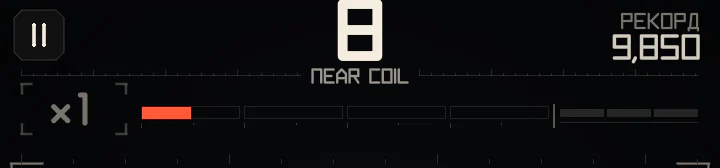
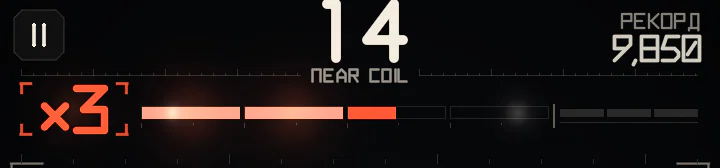
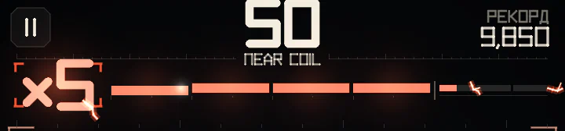
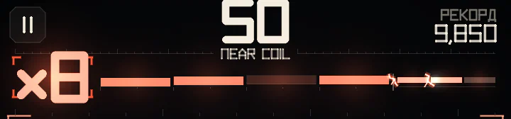
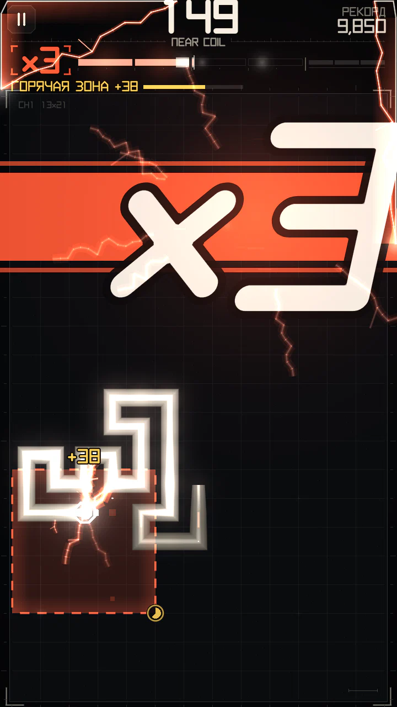
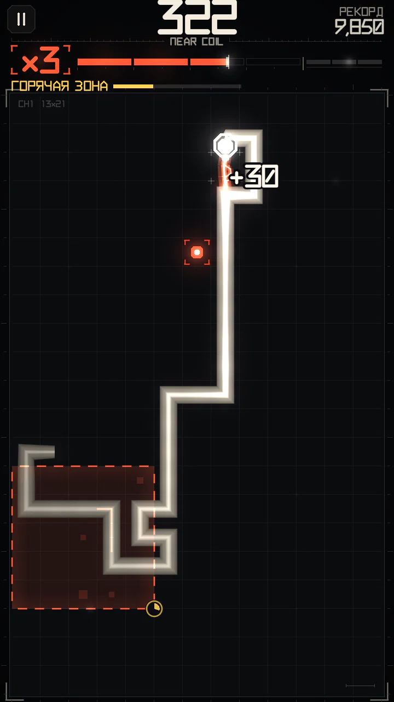

Заряд и множитель
Шкала над полем — сердце счёта. Она задаёт множитель от ×1 до ×8, а множитель умножает каждое очко.
Шкала
Шкала разбита на сегменты, по одному на ступень множителя; заполнил сегмент — множитель вырос на единицу. Играешь осторожно — заряд утекает, держишься вплотную — шкала стоит.




Как растёт множитель
Каждая следующая ступень дороже и её труднее удержать:
| Множитель | Темп | Польза от ВПРИТИРКУ | Утечка заряда |
|---|---|---|---|
| ×1–×2 | Спокойный | Высокая | Медленная |
| ×3–×4 | Бодрый | Ниже | Умеренная |
| ×5–×6 | Быстрый | Низкая | Быстрая |
| ×7–×8 | Очень быстрый | Очень низкая | Очень быстрая |
Обычных сближений хватает, чтобы набрать первые ступени множителя. На высоких ступенях держат множитель в основном рискованные манёвры (ЗАЖИМ, СКВОЗЬ, ИГЛА) и события.
Что даёт заряд
От малого к большому:
- Сближения и скольжение — понемногу, и тем меньше, чем выше множитель. Отлично для ×1–×3, но дальше одних их мало.
- Тесные шаги в щели шириной в клетку — немного за каждый шаг.
- Манёвры — ЗАЖИМ, затем СКВОЗЬ, затем ИГЛА: крупная прибавка, которая не урезается на высоких ступенях, а в серии растёт.
- События — самые крупные прибавки. Завершённое РЕЛЕ всегда поднимает хотя бы на одну ступень (до ×5).
- Модули — прыжок ФАЗЫ, тело, отрезанное СРЕЗОМ, и всё во время ФОРСАЖА (+40 % заряда).
Некоторые уровни кампании масштабируют весь прирост (например, «заряд 130%»).
Как удержать множитель
- После прироста шкала ненадолго замирает, потом начинает утекать. Манёвр или событие дают более долгую паузу, чем сближение.
- Заряд утекает медленнее, пока ты рядом со стенкой из тела или конструкций (готовишь следующий манёвр), и быстрее на просторе.
- Внутри щели шкала не утекает вообще. В ЗОНА УДЕРЖАНИЯ тоже.
- Ступени теряются по одной, с короткой передышкой после каждой — быстрый манёвр ещё может спасти забег.
Держать высокий множитель — значит идти сериями: сближение или манёвр каждые пару секунд. Скольжение вдоль коридора держит шкалу ровной, даже когда каждый проход добавляет мало.
Стадии машины


Вид поля меняется вместе с множителем ступенями, чтобы уровень чувствовался без взгляда на шкалу:
- ×1 — спокойное чистое поле.
- ×2 — машина включается: двойное мигание реле.
- ×3–×4 — заряд: по телу бегут импульсы-удары сердца, по краям экрана — всплески.
- ×5 и выше — перегрузка: раскалённая сердцевина, искры и дуги между соседними участками тела, вспышки по всем краям.
Каждый рост множителя вбивает огромный ×N в часть поля подальше от головы. Падение на стадию — «обесточивание»: края гаснут, от головы к хвосту бежит тёмная волна. Всё это только оформление, одинаковое во всех темах; в настройках можно уменьшить тряску и вспышки.
Голод


Игра вплотную к собственному телу слабеет, если долго не есть: какое-то время после последнего узла она оплачивается полностью, затем её стоимость равномерно падает до нуля. Следующий узел сразу возвращает всё в полном объёме.
Голод уменьшает очки за сближения и за ЗАЖИМ / СКВОЗЬ / ИГЛУ у своего тела. Он не трогает:
- заряд (множитель всё равно растёт);
- узлы, любые выплаты событий и ФАЗУ;
- сближения со столбами, стойками, проводами и изоляторами;
- всё, что происходит в горячей зоне, и уровни без узлов.
Игра это показывает: узел начинает пульсировать скобками (чем сильнее голод, тем быстрее и ярче), дуги у тела тускнеют, а первое сближение за половину цены или меньше выводит СБЛИЖЕНИЯ СЛАБЕЮТ - ЕШЬ, ЧТОБЫ ЗАРЯДИТЬСЯ. В обычной игре ешь гораздо чаще и голода не замечаешь; он нужен, чтобы бесконечное кружение вдоль своего тела не приносило очков.
Точные пороги, утечка за шаг и время удержания — в разделе Тонкости механики.